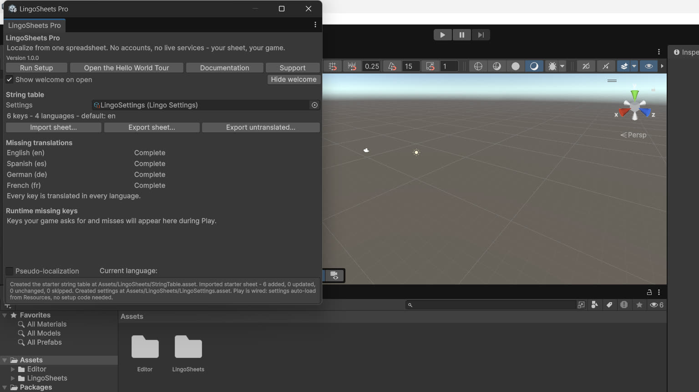

Sheet Format
CSV / TSV / XLSX rules, header discipline. One page of rules. If a sheet follows them, it imports. This page expands the Sheet Format page shipped inside the package; nothing here adds a rule the importer does not apply.

The header row
Row 1 is the header.
- The first cell must be
key. The check is case-insensitive and a byte-order mark at the start of the file is tolerated. - After it, one column per language, headed with its language code:
en,es,de,pt-BR. - Codes are forgiving about spelling.
PT-br,pt_BR, andpt-brall normalise topt-BR: lower-case language, title-case region. - One optional extra column:
comment. Comments are notes for your translators. They are stored on the table and written back on export, so they round-trip. - Any other column is ignored, and the import report counts it as a warning and tells you it was ignored.
- A sheet whose first cell is not
key, or that repeats a language column, is refused. The refusal names the problem cell in plain language. Nothing is imported from a refused sheet.
The rows
- Column 1 is the key:
menu.start,hud.ammo,dialogue.intro.04. Keys are case-sensitive and should never change once shipped, because code and components refer to them. - A row with an empty key is skipped and counted in the report.
- A row whose key starts with
#is a comment row: skipped and counted. - If a key appears twice, the last row wins, and the report warns you with the row number.
- An empty cell means not translated yet. It is not an error. It is exactly what the missing-translation report counts.
- A cell holding only spaces counts as present. Spacing is the translator's decision, and the report respects it.
Values
- Placeholders:
{0},{1}for values your code supplies, and{playerName}-style named placeholders for values supplied from a dictionary. Translators should copy placeholders exactly. A broken placeholder shows the raw text in game and is counted as a defect; it does not interrupt gameplay. - Line breaks inside a cell are fine in CSV and TSV (the field is quoted) and in XLSX.
- Leading and trailing spaces are kept.
CSV
- Comma-separated, UTF-8.
- Quoting follows the usual rules: a field containing a comma, a quote, or a line break is wrapped in double quotes, and a quote inside a field is doubled.
- Commas, quotes, embedded line breaks, empty cells, and Arabic and Hebrew text are all ordinary content for the codec.
- A malformed field, such as a quote that never closes, produces a defined result plus a warning naming the row. The importer reports it; it does not fail silently.
TSV
- The same contract, tab-separated.
- The delimiter is chosen by file extension: comma for .csv, tab for .tsv, with a header check as a fallback.
XLSX
- Import only. There is no XLSX export; export is CSV/TSV (Export and Missing Reports).
- The first worksheet is read. If a workbook holds several worksheets, only the first one is imported, and the report says so.
- Shared strings, inline strings, and cached formula results are understood. Formulas are never executed.
- Numbers import as their plain text.
- Dates are not converted. A date-formatted cell imports as its raw number, which usually shows up in the coverage report as a strange translation. If you ever need a date as a string, type it as text in the sheet.
A minimal example
key,comment,en,es,de
menu.start,Main menu start button,Start,Empezar,Start
game.score,{0} is the point count,Score: {0},Puntos: {0},Punkte: {0}Header discipline is the whole contract: one key column, one column per language, an optional comment column, and nothing else carrying meaning.